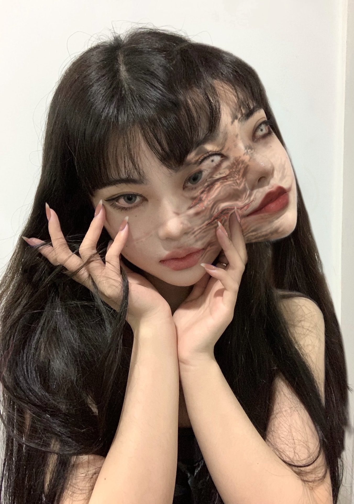

Tomie
Tomie ( яп .富江) — японская манга - ужастик, написанная и проиллюстрированная Дзюндзи Ито . Томиэ была первой опубликованной работой Ито, которую он первоначально отправил в Monthly Halloween, журнал сёдзё в 1987 году, что привело к тому, что он получил награду Кадзуо Умэдзу.[3]
Манга была адаптирована в серию игровых фильмов с восемью частями на сегодняшний день, телесериал -антологию, выпущенный в 1999 году, и потоковый телесериал находился в разработке для Quibi до того, как сервис был закрыт.

Содержание
Сюжет
Томи действует как суккуб , обладая нераскрытой силой, способной заставить любого мужчину влюбиться в нее. Одним своим присутствием или посредством психологических и эмоциональных манипуляций она доводит этих людей до ревнивой ярости, которая часто приводит к жестоким актам насилия. Мужчины убивают друг друга из-за нее, и женщины тоже сходят с ума — хотя есть и такие, кто достаточно силен, чтобы сопротивляться ей. Томи неизбежно убивают снова и снова только для того, чтобы регенерировать и распространять свое проклятие на других жертв, делая ее фактически бессмертной. Ее происхождение никогда не объясняется, хотя некоторые пожилые мужчины в сериале предполагают, что она существовала задолго до событий манги; в Мальчик, выясняется, что она знала своего будущего учителя Сатору Такаги с детства.
Каждая история демонстрирует различных персонажей, которые сталкиваются с Томи в ее многочисленных (часто отвратительных) формах, причем у некоторых есть свои собственные арки или они возвращаются в более поздних главах. Регенеративные способности Томи (частично подпитываемые каннибализмом и ассимиляцией ): помимо того, что она быстро восстанавливается после ужасных и, казалось бы, смертельных ран, она также может воспроизвести себя, неестественно вырастая из любой части своего тела, будь то из отрубленных конечностей, органов или даже пролитой крови. Радиация ускоряет процесс ее заживления/регенерации. Ее клетки также способны превращать жертву в Томи с помощью трансплантации органов. Несколько персонажей даже вынуждены расчленить ее труп, невольно позволяя большему количеству копий Томи расти и распространяться по миру. Даже пряди ее волос опасны; проникает в мозг своей жертвы, чтобы овладеть им, и в конечном итоге убить их, когда он дико разрастается в теле. Также показано, что даже если тело Томи не повреждено, ее тело попытается вырастить другое Томи через опухоль.наросты, как правило, когда она эмоционально напряжена. Однако некоторые копии Tomie не выносят друг друга; один убивает одного лично, в то время как другие приказывают сделать это через мальчиков, которых они соблазняют / порабощают. Огонь - единственный известный способ уничтожить Томи навсегда, но только в том случае, если плоть полностью обуглена.
Следующая сюжетная арка, начинающаяся как приквел , показывает, что девочка может естественным образом вырасти в Томи с помощью инъекции крови и что она может стареть, если она еще не скопировала себя. Человек, ответственный за эти инъекции, - ужасно обожженный незнакомец - когда-то супермодель, опозоренная Томи в прошлом, - который жаждет мести, сделав одного из этих «естественных» Томи старым и уродливым. Ему удается заключить Томи по имени «Аяка» в цементный блок с помощью старшей сестры Аяки. Затем они ждут много лет, бесконечно слыша ее мучительные крики, прежде чем, наконец, сломать блок, обнаружив, что Томи каким-то образом сбежала через крошечную трещину, а ее очевидный плач был не чем иным, как ветром, дующим через полый блок.
В арке, выпущенной исключительно вместе с DVD-релизом коллекции Дзюндзи Ито , под названием « Томие: Поглощение », Томи встречает человека, способного менять тело, которому трудно совладать с ее различными способностями.
В 2018 году была выпущена четырехстраничная кроссоверная арка с Соити Цудзи под названием « Одержимый Соити ». как пролог к более крупному противостоянию между парой, поскольку младший Томи просит представиться.

Публикация
Основная статья: Список глав Томи
Томи издается Асахи Сонорама и появлялся в виде сериала в журнале манги Monthly Halloween с 1987 по 2000 год. В феврале 1996 года Томи получил один том в переплете под названием Tomie no kyōfu gaka (富江 の 恐 怖 画 家, букв. Tomie of Fear: Painter ) .[4] Два тома были собраны в общую серию «Сборник комиксов ужасов Дзюндзи Ито» (伊藤潤二恐怖マンガCollection ) как тома 1 и 2 серии.[5][6] В феврале 2000 года Асахи Сонорама выпустила сборник под названием Tomie Zen .(富江 (全) ).[7] ComicsOne выпустила оба тома 1 апреля 2001 г. с перевернутыми иллюстрациями (читать слева направо). [8][9]
Вторая серия под названием Atarashī Tomie (新しい富江, New Tomie ) была сериализована в Nemuki и собрана в единый том под названием Tomie Again: Tomie Part 3 (富江Again―富江 Part3 ) и выпущена в марте 2001 года . снова переиздан как часть серии «Музей ужасов Дзюндзи Ито» (伊藤潤二恐怖博物館) .[11][12] Эта версия также была выпущена в двух томах с добавлением глав, изначально выпущенных в Tomie Again . Темная лошадка комиксывыпустил эту версию в исходном формате справа налево.[13][14]
Асахи Сонорама снова переиздал мангу в двух томах как часть коллекции шедевров Дзюндзи Ито (伊藤潤二傑作集, Itō Junji Kessaku-shū ) 20 января 2011 г.[15][16]
Viz Media объявила о своей лицензии на сериал 26 марта 2016 года. Они опубликовали его как единый том в твердом переплете, как и их выпуски Gyo и Uzumaki.[17]
Адаптации
Основная статья: Томи (сериал)
Томи был адаптирован для серии японских фильмов ужасов, выпущенных в период с 1999 по 2011 год. На сегодняшний день в сериале девять фильмов.
Большинство историй манги происходят в темноте ночи из-за ее жуткого ощущения, и фильмы обычно следуют этому примеру.
Два эпизода были адаптированы для сборника Junji Ito Collection.
Сексуальность Томи в фильмах более неоднозначна. В манге отношение Томи к другим людям, кажется, колеблется между тонко завуалированной враждебностью и откровенной убийственной яростью (если только она не собирается извлекать из этого выгоду), в то время как воплощение в фильме, как известно, соблазняет женщин так же, как и мужчин.
В июле 2019 года было объявлено, что Александр Аджа разрабатывает адаптацию веб-телесериала Tomie для Quibi совместно с Sony Pictures Television и Universal Content Productions , с Дэвидом Лесли Джонсон-МакГолдрик в качестве сценариста и исполнительного продюсера и Хироки Широта на борту в качестве сценариста и исполнительного продюсера. сопродюсер. В июле 2020 года было объявлено, что Аделина Рудольф получила роль Томи.[18][19] В октябре 2020 года было объявлено, что Quibi закрывается 1 декабря 2020 года, в результате чего судьба сериала остается под вопросом.[20][21]
Прием
Дзюндзи Ито получил премию Кадзуо Умэдзу 1989 года за свою работу над « Томие » . С тех пор манга породила культ поклонников и до сих пор в целом хвалят как фанаты, так и критики.
Смотрите также
- "Кэрри Уайт"
- Угорь Девушка
- Девушка из ниоткуда
- Гарпия
- "Дженифер"
- тело Дженнифер
- "Шамбле"
- Тамара
Внешние ссылки
Томи (манга) в энциклопедии Anime News Network
Позвоните нам!